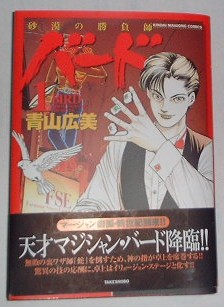
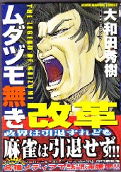
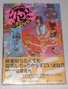
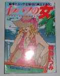
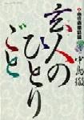

いままで「σ(_ _)の独断と偏見」とは書いてはいても、ほんのチョッピリは客観性も考えていた。しかしコミックチョイス10は、まさに唄い文句通り。名作も力作も関係ない、まったくσ(^0^)の好みだけ。したがって一切の抗議も非難も知ったことではない（笑） で、どちらかいえばシリアス系よりギャグ系が好みなのだ。おのずからそういう作品が多いかんね。
|
| 1 |
バード |
青山広美 |
竹書房 |
H12.10.7 |
信じられないマジックの世界、シリアスギャグの大傑作。「トーキョーゲーム」も面白かったが、さらにグレードアップ。
|
|  |
|
| 2 |
赤い通り雨 |
石井 隆 |
竹書房 |
H2.5.2 |
ギャグ系が好きといいながら、シリアス系の登場（^0^；どんよりした絵が最高。どの作品もその雰囲気に飲み込まれる。この作品は、それらを代表して。
|
|
| 3 |
フリテン君 |
植田まさし |
竹書房 |
S55.5.5 |
４コマギャグの連発。とぼけたアホらしさがたまんね〜
|
|
| 4 |
ムダヅモ無き改革
（１）（２）２ |
大和田秀樹 |
竹書房 |
08.9.19 |
ハチャメチャギャグ満載。著者には麻雀ギャグ界の覇王の称号を。
|

|
|
|
| 4 |
スーパーヅカン |
片山まさゆき |
竹書房 |
S57.12.25 |
素晴らしいギャグワールド。わいは豊臣クンの大ファンや。
|
|
| 5 |
まんが大王 |
喜国雅彦 |
竹書房 |
H4.3.1 |
抱腹絶倒の嵐。作者に麻雀ギャグ界の帝王の称号を。
|
|  |
|
| 6 |
イッパツの女 |
桐島いつみ |
竹書房 |
H10.9.7 |
昨日読んで笑い転げたところを、今日読んでまた笑い転げる。作者に麻雀ギャグ界の女王の称号を。
|
|  |
|
| 7 |
まあじゃんほうろうき |
西原理恵子 |
竹書房 |
H2.12.20 |
云わずと知れた泣き笑い傑作修行記。
|
|
| 8 |
白 ＆ 黒シリーズ |
渋沢さつき |
竹書房 |
H4.5.24 |
絵がきれい。主人公のキャラクターも最高。それこそ絵にかいたような（笑）ハンサム雀士。
|
|
| 9 |
玄人のひとりごと |
中島徹 |
小学館 |
H3.11.1 |
麻雀ギャグコミックの傑作。
昭和60代「少年サンデー増刊号」に連載された「少年雀鬼HIGASHI」とともに、氏の代表作。
|
|
| 10 |
万病マージャン |
山松ゆうきち |
講談社 |
H1.9.22 |
いや、ほんとうに面白え。麻雀ギャグ世界のドンだ。「エラヅヨの殺し屋」など、表題作以外の作品も傑作。
|